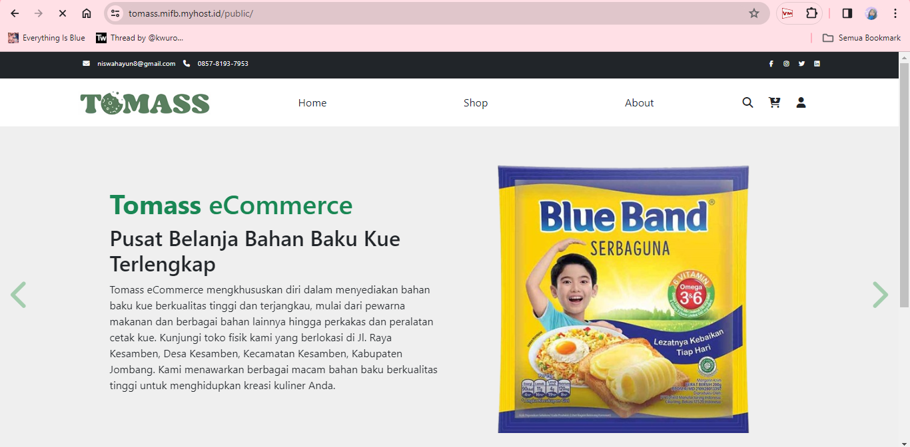

TOMASS

TOMASS (Tobaku Management Sales System) merupakan aplikasi Point of Sales yang menyediakan fitur penjualan dan manajemen toko untuk toko bahan kue (TOBAKU). Singkatnya TOMASS ini merupakan aplikasi marketplace yang menyediakan kebutuhan pembuatan kue seperti alat dan bahan untuk membuat kue. Terdapat multi login user yang masing-masingnya menyediakan fitur yang berbeda pula. TOMASS ini merupakan hasil dari kerja sama tim Berru Saha untuk proyek tugas akhir semester 3. Untuk lebih lengkapnya silahkan kunjungi website TOMASS melalui tombol di bawah.